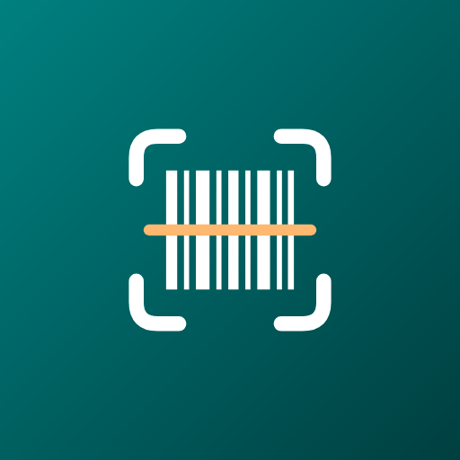

BarcodeVault
Android için barkodla stok sayımı ve envanter uygulaması
BarcodeVault, Android için ücretsiz bir stok sayımı ve barkod okuyucu uygulamasıdır. Telefonunuzu depo, mağaza, ambar ve ev envanteri için hızlı bir sayım aracına dönüştürür: tarayın, sayın, stok sayımınızı Excel, CSV ya da PDF olarak dışa aktarın. Sayım çevrimdışı çalışır ve kayıtlarınız cihazınızdan hiç çıkmaz.
Kimler için
- Mağaza ve perakende – stok sayımı, envanter sayımı ve mal kabul kontrolü
- Depo ve ambar – konuma, koridora ve rafa göre envanter
- Ofis ve BT – seri numarasıyla demirbaş takibi (tekrar okutulan kod uyarıyla reddedilir)
- Küçük işletmeler – e-ticaret satıcıları, kafeler, eczaneler, kütüphaneler ve ev koleksiyonları
Tara ve say
Ses ve titreşimle kesintisiz tarama. Tekrar okutulan kodlarda ne olacağını seçin: miktarı artır, uyar ya da ayrı satır ekle. Bitir'e dokunup doğrudan kaydedin veya paylaşın.
Excel, CSV ve PDF
Her sayımı tek dokunuşla Excel (.xlsx), CSV ya da yazdırmaya hazır PDF rapor olarak aktarın. Baştaki sıfırlar korunur.
QR kod ve barkod
Bağlantı, Wi-Fi ve kişi kartı için QR kod; EAN, UPC ve Code 128 barkodları oluşturun. PNG, JPG, PDF ya da SVG olarak kaydedin veya yazdırın.
Fotoğraf ve PDF
Galerideki bir fotoğraftaki ya da PDF belgesindeki tüm barkod ve QR kodları okuyup sayıma ekleyin.
Yedek ve hatırlatma
Günlük ya da haftalık otomatik yedek; isterseniz kendi şifrenizle AES-256 şifreleme. Kendi sayımlarınız için isteğe bağlı hatırlatmalar.
Gizlilik öncelikli
Hesap yok. Sayımlar, notlar, fotoğraflar ve yedekler cihazınızda kalır. Ücretsiz, reklamlarla desteklenir.
Telefonla stok sayımı nasıl yapılır?
- Yeni sayım başlatın ve bir ad verin, örneğin “Mağaza 1 – Kasım”.
- Barkodları kamerayla tarayın. Her okutma miktarı 1 artırır; koliler için sayı yazın, konum ya da not ekleyin.
- Bitir'e dokunun ve sayımı Excel, CSV ya da PDF olarak kaydedin veya muhasebecinize gönderin.
Büyük envanterler için ücretsiz araçlar
Abonelik yok: tüm araçlar ücretsiz. QR kod ve barkod oluşturma gibi her biri kısa bir videodan sonra 1 saatliğine açılır.
- Fotoğraf ve PDF tarama – bir fotoğraftaki ya da PDF'teki tüm kodları okuyup sayıma ekleyin.
- Toplu Excel – birden çok sayımı, barkod başına toplamlarla tek bir çalışma kitabına aktarın.
- Tüm sayımlarda ara – bir barkodu yazın ya da okutun; hangi sayımlarda, hangi miktar ve konumda olduğunu görün.
- Beklenen stokla karşılaştır – stok listenizi (Excel ya da CSV) içe aktarın; eksik, fazla ve farklı miktarları görün.
- Toplu etiket yazdırma – çok sayıda barkod ya da QR kodu A4 etiket sayfalarına PDF olarak basın.
Sayıma devam etmek, dışa aktarma ve yedekleme her zaman ücretsizdir ve video gerektirmez.
Sık sorulan sorular
BarcodeVault ücretsiz mi?
Evet. BarcodeVault ücretsizdir, reklamlarla desteklenir ve abonelik yoktur. Yeni sayım, görüntü tarama, QR ve barkod oluşturma ile araçlar kısa bir videodan sonra 1 saat açık kalır. Sayıma devam etmek, dışa aktarma ve yedekleme her zaman ücretsizdir.
İnternetsiz çalışır mı?
Evet. Tarama, sayım, dışa aktarma ve yedekleme internet olmadan çalışır. Barkod tanıma telefonda yapılır; internet yalnızca reklamlar için kullanılır.
Hangi barkod türlerini okur?
QR Code, Micro QR, rMQR, Data Matrix, PDF417, Aztec, MaxiCode, EAN-13, EAN-8, UPC-A, UPC-E, Code 128, Code 39, Code 93, ITF, Codabar ve GS1 DataBar ailesi dahil 22 tür.
Stok sayımını Excel'e aktarabilir miyim?
Evet. Her sayım Excel (.xlsx), CSV ya da yazdırılabilir PDF rapor olarak kaydedilebilir veya paylaşılabilir. Baştaki sıfırlar korunur; aynı barkodlar toplam miktarla tek satırda birleştirilebilir.
Verilerim nerede saklanıyor?
Yalnızca cihazınızda. Hesap ve buluta yükleme yoktur. İsteğe bağlı yedek dosyaları kendi şifrenizle AES-256 ile şifrelenebilir.
iPhone'da var mı?
Hayır. BarcodeVault, Android 8.0 ve üzeri telefonlar için Google Play'de sunulan bir Android uygulamasıdır.